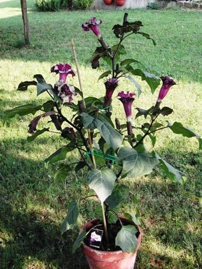
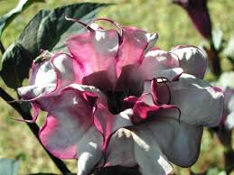

Agli esordi di questo blog avevo presentato una bella pianticella di Datura stramonium; era un periodo in cui questi tossici e interessanti vegetali si erano chissà come diffusi in un campo ex coltivato a mais vicino alla mia zona.
In seguito lo stramonio sembra scomparso, non più ripresentandosi l'anno seguente almeno nel medesimo posto; tuttavia mi aveva allora regalato il tempo per osservarmelo con tutta calma.
Siccome le piante che forniscono buoni elementi di discussione nei trattati di tossicologia mi affascinano, quest'anno mi sono procurato per curiosità un esemplare di Datura metel, dai caratteristici grandi fiori viola frangiati di bianco.
I principi tossici (notevoli!) sono quelli già discussi per lo stramonio, pertanto non ne riparlo ulteriormente.

La pianta come si vede cresce rigogliosa nel clima di mezz'ombra e di mezza montagna; in pieno sole sembra soffrire.
A differenza delle foglie, di odore poco piacevole, esibisce inaspettatamente nella trombetta un deliziosissimo e delicato profumo.
Peccato che i fiori appassiscano molto velocemente: per odorarli con voluttà occorre affidarsi ad un opportuno giorno fuggente...

Ora, nell'attesa dei frutti e dei semi, godiamoci questa fresca e come sempre meravigliosa estate.